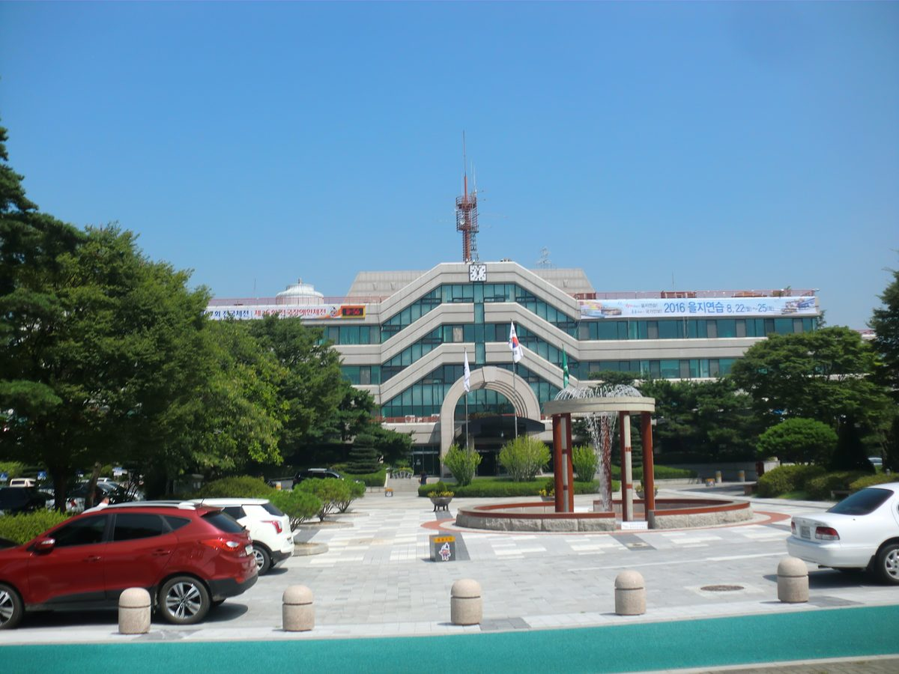

아산시의회 상임위, 태양광 200m·풍력 1,500m 입지기준 조례안 통과…세대주 80% 동의 마을사업은 이격거리 예외

천철호 의원 대표발의 도시계획 조례 개정안 건설도시위원회 통과, 문화유산 보호구역·관광지 등 입지 제한 대상 추가…주민참여형·지붕형·햇빛소득마을도 예외, 30일 본회의 의결 남아
충남 아산시의회 건설도시위원회가 태양광·풍력발전시설의 입지 기준을 새로 정한 「아산시 도시계획 조례 일부개정조례안」을 통과시켰다. 천철호 의원이 대표발의한 개정안은 태양광발전설비의 경우 부지 경계에서 반경 200m 안에 일정 기준 이상의 주택이 없도록 하고, 풍력발전설비에는 반경 1,500m 안 주택과 반경 500m 안 도로 기준을 적용한다. 문화유산 보호구역과 역사문화환경보전지역, 생태·경관보전지역, 관광지·관광단지, 자연취락지구는 입지 제한 대상에 새로 들어갔고, 태양광 진입도로는 기존 포장도로에 더해 골재포장도로까지 인정하도록 범위를 넓혔다. 마을 자치규약대로 총회 승인을 받고 주민등록상 세대주 80% 이상이 동의한 태양광은 이격거리 기준을 적용받지 않으며, 주민참여형 발전설비와 지붕형·자가소비용 태양광, 햇빛소득마을 같은 마을공동사업에도 예외 규정을 뒀다. 천 의원은 재생에너지를 늘리려면 "명확한 입지 기준과 함께 주민 수용성을 높이는 노력이 필요하다"며 상위법령 기준을 반영하고 주민 동의 요건을 구체화했다고 설명했다. 개정안은 오는 30일 열리는 제268회 아산시의회 임시회 제6차 본회의에서 의결되면 확정된다.
시민에너지 관점
세대주 80%가 동의한 마을사업과 햇빛소득마을에 이격거리를 풀어 준 아산의 개정안은, 발전소를 받아들일지는 거리 숫자보다 누가 주인이냐에 달려 있다는 점을 조례에 담은 것으로 보인다. 마을사업이라는 이름만 빌린 외부 사업이 예외를 누릴 수 있다는 우려도 나올 수 있지만, 답은 예외를 거두는 데가 아니라 동의 서명에 더해 주민 지분과 수익 배분 구조까지 요건으로 따지는 데 있다. 기후솔루션 조사에서 기초지자체 129곳 가운데 118곳에 상위법이 허용하지 않는 이격거리 조항이 남아 있는 만큼, 조례 정비는 아산만의 일이 아니다. 다른 시군도 서둘러 조례를 고치되, 주민이 직접 소유하는 사업에 문을 여는 기준을 함께 넣어야 한다.
출처: 아산데일리 2026-10-21 박진석 원문 보기
牙山市議会常任委、太陽光200m・風力1,500mの立地基準条例案を可決…世帯主80%同意の村事業は離隔距離の例外に
チョン・チョルホ議員が代表発議した都市計画条例改正案が建設都市委員会を通過、文化遺産保護区域・観光地などを立地制限対象に追加…住民参加型・屋根置き・太陽光所得村も例外、30日の本会議議決を残す
忠清南道牙山（アサン）市議会の建設都市委員会は、太陽光・風力発電施設の立地基準を新たに定めた「牙山市都市計画条例一部改正条例案」を可決した。チョン・チョルホ議員が代表発議した改正案は、太陽光発電設備について敷地境界から半径200m以内に一定基準以上の住宅がないことを求め、風力発電設備には半径1,500m以内の住宅と半径500m以内の道路に関する基準を適用する。文化遺産保護区域、歴史文化環境保全地域、生態・景観保全地域、観光地・観光団地、自然集落地区が新たに立地制限の対象に加わり、太陽光の進入道路は従来の舗装道路に加えて砂利舗装道路まで認めるよう範囲を広げた。村の自治規約に基づく総会の承認と、住民登録上の世帯主80%以上の同意を得た太陽光には離隔距離の基準を適用せず、住民参加型の発電設備、屋根置き・自家消費用の太陽光、太陽光所得村のような村の共同事業にも例外規定を設けた。チョン議員は、再生可能エネルギーを増やすには「明確な立地基準とともに住民の受容性を高める努力が必要だ」と述べ、上位法令の基準を反映し住民同意の要件を具体化したと説明した。改正案は30日に開かれる第268回牙山市議会臨時会第6次本会議で議決されれば確定する。
市民エネルギーの視点
世帯主の80%が同意した村の事業や太陽光所得村に離隔距離を適用しないとした牙山の改正案は、発電所を受け入れるかどうかは距離の数字よりも誰が持ち主かで決まるという点を条例に盛り込んだものとみられる。村の事業という名前だけを借りた外部の事業が例外を受けかねないとの懸念も出得るが、答えは例外をなくすことではなく、同意の署名に加えて住民の持ち分と収益配分の仕組みまで要件として問うことにある。気候ソリューション（Solutions for Our Climate）の調査で、基礎自治体129カ所のうち118カ所に上位法が認めない離隔距離の条項が残っていることを考えれば、条例の見直しは牙山だけの課題ではない。ほかの市や郡も急いで条例を改め、住民が自ら所有する事業に門を開く基準をあわせて盛り込むべきだ。
出典: Asan Daily 2026-10-21 Park Jin-seok 原文を読む
牙山市议会常委会通过太阳能200米、风电1,500米选址标准条例案，户主80%同意的村庄项目可免除间距限制
Cheon Cheol-ho议员领衔提出的城市规划条例修正案在建设城市委员会获得通过，文化遗产保护区、旅游地等新增为选址限制对象；居民参与型、屋顶型和阳光收入村也属例外，尚待30日全体会议表决
韩国忠清南道牙山市议会建设城市委员会通过了重新制定太阳能和风力发电设施选址标准的《牙山市城市规划条例部分修正条例案》。由Cheon Cheol-ho议员领衔提出的修正案规定，太阳能发电设备用地边界半径200米内不得有超过一定标准的住宅；风力发电设备则适用半径1,500米内住宅和半径500米内道路的标准。文化遗产保护区、历史文化环境保护地区、生态和景观保护地区、旅游地和旅游园区、自然村落地区被新列为选址限制对象，太阳能设施的进场道路也从原来的铺装道路扩大到碎石铺装道路。依据村庄自治规约获得村民大会批准、并取得户籍登记户主80%以上同意的太阳能项目，不适用间距标准；居民参与型发电设备、屋顶型和自用型太阳能，以及阳光收入村等村庄共同项目也设有例外规定。Cheon议员表示，要扩大可再生能源，"需要明确的选址标准，同时努力提高居民的接受度"，并说明修正案反映了上位法令的标准，细化了居民同意要件。修正案若在30日举行的牙山市议会第268次临时会第6次全体会议上通过，即告确定。
市民能源视角
牙山的修正案让户主80%同意的村庄项目和阳光收入村免受间距限制，似乎是把一个道理写进了条例：能否接受发电站，与其说取决于距离数字，不如说取决于谁是主人。有人可能担心，只借用村庄项目名义的外部项目也会享受例外；但答案不是取消例外，而是在同意签名之外，把居民持股和收益分配结构也列为要件来审查。韩国气候解决方案（Solutions for Our Climate）的调查显示，129个基层地方政府中有118个仍保留上位法不允许的间距条款，可见修订条例不只是牙山的事。其他市郡也应尽快修改条例，并同时写入为居民直接拥有的项目敞开大门的标准。
来源: Asan Daily 2026-10-21 Park Jin-seok 查看原文
Asan council committee passes siting rules of 200m for solar and 1,500m for wind, exempting village projects backed by 80% of households
Ordinance amendment sponsored by Councilor Cheon Cheol-ho clears the Construction and Urban Committee, adding heritage zones and tourist areas to restricted sites; resident-participation, rooftop and Sunlight Income Village projects also exempt, plenary vote due on the 30th
The Construction and Urban Committee of the Asan City Council in South Chungcheong Province has passed an amendment to the city's urban planning ordinance that sets new siting standards for solar and wind power facilities. Sponsored by Councilor Cheon Cheol-ho, the amendment requires that no more than a set number of homes lie within a 200m radius of a solar site's boundary, and applies standards for homes within 1,500m and roads within 500m to wind turbines. Cultural heritage protection zones, historic and cultural environment conservation areas, ecological and landscape conservation areas, tourist sites and complexes, and natural village districts have been added to the list of restricted locations, while access roads for solar sites may now be gravel-paved as well as paved. Solar projects approved by a village general assembly under the village's own rules and backed by at least 80% of registered heads of household are exempt from the setback rules, and exemptions also cover resident-participation projects, rooftop and self-consumption solar, and joint village projects such as Sunlight Income Villages. Cheon said expanding renewable energy "requires clear siting standards along with efforts to raise local acceptance," explaining that the amendment reflects higher-level law and spells out resident consent requirements. The amendment will be finalized if approved at the sixth plenary session of the council's 268th extraordinary session on the 30th.
Citizen Energy View
By lifting setback rules for village projects backed by 80% of households and for Sunlight Income Villages, Asan's amendment appears to write into local law the idea that whether a community accepts a power plant depends less on distance figures than on who owns it. Some may worry that outside developers could borrow the label of a village project to claim the exemption, but the answer is not to scrap the exemption; it is to require resident equity and a profit-sharing structure on top of consent signatures. With a Solutions for Our Climate survey finding that 118 of 129 local governments still keep setback clauses that higher-level law does not allow, revising ordinances is not a task for Asan alone. Other cities and counties should move quickly to amend their rules and, at the same time, write in standards that open the door to projects owned directly by residents.
Source: Asan Daily 2026-10-21 Park Jin-seok Read the original